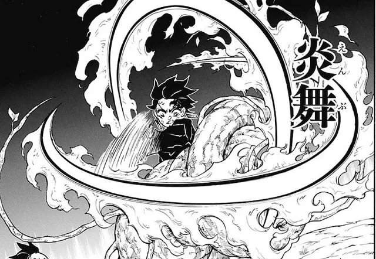
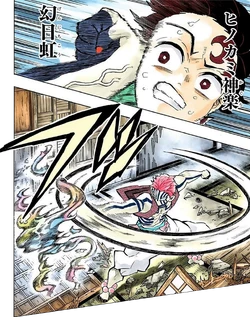
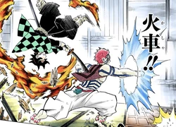

This site about slayers and demons from one manga "Kimetsu no Yaiba"
Ill try to say all about thems
The fight in this manga is Sun people and Moon demons
Demons are stronger then people
and Demons using their blood arts
But people maded breathing styles wich can help in defeating and people who fight with demons named slayers
The First breathing is Sun from it come anoser breathing styles like:
Flame Love Water Flower Insect Serpent Thunder Sound Stone Wind Mist Moon
Beast are special breathing style maded by Inosuke
There are many slayers wich styles are good but now we will talk about sun breathing
And first master of Sun breathing and mader of all anoser breathing styles is Yoriichi Tsugikuni
But now sun breathing use Tanjiro Kamado
So lets get started with Sun breathing style wich have 13 styles but 13 form is all 12 forms in one time
1form Waltze
2form Waltze hit 
3form Clear Blue skye 4form Burning crimson reflection
5form Fake Rainbow 
6form Fire Wheel 
7form Burning bonnes summer sun 8form Sun galo 9form 10form 11form 12form